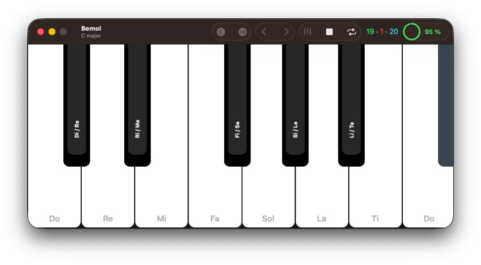

Bemol
A free and open-source ear training app that helps music hobbyists and music students train and develop relative pitch, the ability to recognize a played musical note in a given tonal context.

How it works
Bemol helps you learn the character of each musical note by getting you to internalize how each note relates to its nearest tonic in a given key.
In each practice session, you are prompted to identify a series of played notes. Before each note, Bemol plays a I - IV - V - I cadence to establish the key. After you have identified the note, a short melody is played to resolve the note to the nearest tonic. Listening to this final resolution helps cement the relationship between the note and the tonic in your mind's ear.
As this process repeats, you start to internalize the character of each note in a given tonal context. This helps develop relative pitch and eventually you will have a much easier time recognizing any note as long as a tonal context is clearly established.
This ear training method was first described and implemented by Alain Benbassat in his free Functional Ear Trainer desktop app. Bemol is simply a native, free and open-source implementation of the method for macOS.
Practice, practice, practice
Bemol is organized in a series of progressive levels. The first level consists only of the first 4 notes in the key of C major. Once you have at least 90% accuracy in this level, you can move to the next one where you will practice the next 4 notes. Then, you move on to practice recognizing notes from the entire scale.
Once the entire scale is mastered, the next levels will progressively introduce chromatic notes. When you're comfortable recognizing both diatonic and chromatic notes in the key of C major, a new key is introduced beginning again with the first 4 notes. The whole process repeats along the circle of fourths until you have learned to recognize all notes in all 12 major and 12 minor keys.
Reality check
No app out there (including Bemol) on its own will make you develop your ear. Actually sitting down at your instrument practicing, learning, and making music over a very long period of time will. Use Bemol as a complement to a consistent practice routine and as a tool for measuring how far you've come.